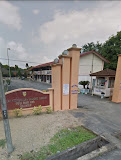
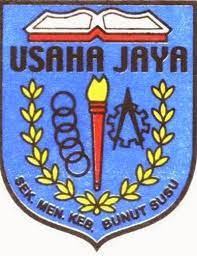
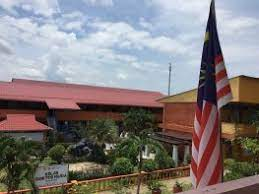
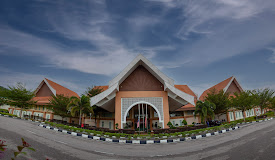
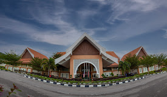
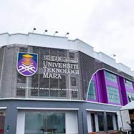
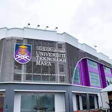

MY EDUCATION
- SEKOLAH KEBANGSAAN TANJONG CHENAK 
- This is my first school ever and I really love it! Never regret been in this schooll. Literally period. I clearly remember my first day at school and the memories of this school are still vivid. I still feel how warmly I was welcomed at this school. Such as warm welcome can truly define a child's school experience in the best possible way. I was introvert kid and dont like to talk with anyone but dont worry huys I still get friends.
- SEKOLAH MENENGAH KEBANGSAAN BUNUT SUSU
- My time in high school was am equally valueble learning experience and I met some of the best friends I have today in high school. Admittedly, I made a lot of blunders and mistakes during my high school years. But thanks to my sincere friend and honest teachers I was always rescued from too much trouble. This is how high school taught me the true meaning of co-operation and love. Looking back, I realized how ignorant I was during my school days and how many shortcomings I had. However, my time in high school showed me how important school life is and I would not have the great friends, good knowledge, good experience and good memories I have today if it was not for my high school years. I started to be extrovert person.
- KOLEJ MATRIKULASI KELANTAN
 

- Next move to matriculation level. I start working hard towards my goals. Thanks to that, I am happy with result The worst thing I need to find new friends but Alhamdulillah we match until now. I still have a lot of pictures we took which remind me of all good memories we made. I remember the days we celebrate and the extracurricular activities we took part in. Actually, this is my first time i need to stay at hostel.
- UNIVERSITI TEKNOLOGI MARA KAMPUS KOTA BHARU
 

- Finally, i got into university. When I started university I was in hurry situation that even not buy anything yet like suddenly. But what I want to say is it all depends on your personality - you can ostracise yourself, or you can decide to blend in. You're all student on the same course after all. Education is very important aspect of our lives. It is our education that makes us who we are and determine what we become. Therefore, education is not something to be taken lightly.